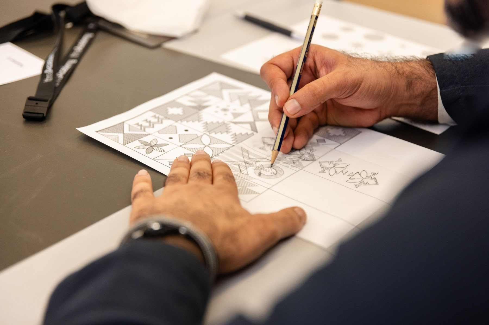

تابع رواد أعمال
هذه الروابط تتحدث مع كل بناء وتعرض الفعاليات القادمة والجارية لهذا السياق فقط.
رواد أعمال في EventLive مع الفعاليات القادمة والجارية والمنتهية ومصدر كل فعالية.
هذه الروابط تتحدث مع كل بناء وتعرض الفعاليات القادمة والجارية لهذا السياق فقط.
At Boulevard City, step into the eerie world of Poppy Playtime, where an abandoned toy factory hides sinister secrets. This immersive hide-and-seek horror challenge keeps you on edge as every shadow and corner could be a safe haven—or a trap. Combining suspense, mystery, and thrilling interactive gameplay, Poppy Playtime delivers one of most unforgettable and spine-tingling adventures. Book Now

At Boulevard City, step into the eerie world of Poppy Playtime, where an abandoned toy factory hides sinister secrets. This immersive hide-and-seek horror challenge keeps you on edge as every shadow and corner could be a safe haven—or a trap. Combining suspense, mystery, and thrilling interactive gameplay, Poppy Playtime delivers one of most unforgettable and spine-tingling adventures. Book Now
تفاصيل الحضور
Boulevard City is one of Riyadh Season’s most iconic entertainment hubs, offering a vibrant mix of attractions, from the dazzling dancing fountain to upscale dining, shopping, theaters, and immersive experiences for all ages. Visitors can explore OLULOU, where a towering dinosaur skeleton offers the perfect photo op, and let kids dive into four imaginative zones at PLAY-TOPIA. For thrill-seekers, Poppy Playtime delivers suspense inside an abandoned toy factory, A Lot Like Life challenges your bravery in a zombie outbreak, and The Conjuring opens October 15 with spine-chilling scenes from the haunted universe of Annabelle. Families can brave the haunted farm at Zeela House, while pop culture lovers enjoy FUNKO (from Nov 15), with giant figures and collectibles, and gamers embark on a real-world adventure inside MINECRAFT (also from Nov 15). Launching December 18, Flying Over Saudi offers a groundbreaking 5D flight experience that takes you on a 7-minute immersive ride above Saudi Arabia’s most iconic landmarks.
تفاصيل الحضور
The Misk Local Traineeship Program connects promising Saudi talent with employers, providing hands-on experience, career mentorship, and high-quality opportunities that enhance job readiness and support a confident transition into the workforce. المصدر الرسمي: Misk Hub.
تفاصيل الحضور
Kashtah brings the charm of a traditional outdoor gathering to Al-Hadabah Park in Abha, creating a family-friendly destination where nature, adventure, and relaxation come together. المصدر الرسمي: Visit Saudi.
تفاصيل الحضور
تقدم مراكز دعم المنشآت العديد من الأنشطة المتخصصة لدعم المنشآت ورواد الأعمال، وذلك من خلال استقطاب المتخصصين في مجالات متعددة لمساعدة رواد الأعمال والتجار لبدء مشاريعهم ولتطوير نماذج عمل للتّمكن من استمرارية أعمالهم. مكان اللقاء: مراكز دعم المنشآت (الرياض - جدة - الخبر - المدينة المنورة - افتراضي) للاطلاع على خطوات التسجيل في اللقاءات والفعاليات اضغط هنا
تفاصيل الحضور
تقدم مراكز دعم المنشآت العديد من الأنشطة المتخصصة لدعم المنشآت ورواد الأعمال، وذلك من خلال استقطاب المتخصصين في مجالات متعددة لمساعدة رواد الأعمال والتجار لبدء مشاريعهم ولتطوير نماذج عمل للتّمكن من استمرارية أعمالهم. مكان اللقاء: مراكز دعم المنشآت (الرياض - جدة - الخبر - المدينة المنورة - افتراضي) للاطلاع على خطوات التسجيل في اللقاءات والفعاليات اضغط هنا
تفاصيل الحضور
تطلق جامعة الجوف البرنامج الصيفي بجامعة الجوف 1447هـ – 2026م، بوصفه برنامجًا نوعيًا متكاملًا يستهدف تنمية المهارات وتطويرها، ونشر ثقافة الابتكار، وترسيخ ثقافة التطوع وخدمة المجتمع، بما يعزز دور الجامعة التنموي والمجتمعي، ويفتح مسارات واسعة لاستثمار فترة الصيف في برامج معرفية وتدريبية وتطوعية ورياضية موجهة لمنسوبي الجامعة وطلبتها والخريجين وأفراد المجتمع. ويستهدف البرنامج، الذي يمتد من شهر يوليو حتى نهاية أغسطس 2026م، أكثر من 16,000مستفيد من داخل الجامعة وخارجها، من خلال أكثر من 50 برنامجًا وفعالية نوعية، وما يزيد على 210 ساعة تدريبية مكثفة، إلى جانب مشاركة أكثر من 300 متطوع أكاديمي وطبي، وتنفيذ أكثر من 11,000 ساعة تطوعية معتمدة، إضافة إلى أكثر من 10 بطولات رياضية صيفية.
تفاصيل الحضور
Produced by the King Abdulaziz Center for World Culture (Ithra), a new animated series makes its debut! Set in the diverse environments of Saudi Arabia, small animals embark on charming adventures, discovering the meaning of early emotions such as gratitude and joy in a warm world designed for young children.
تفاصيل الحضور
Misk's 2030 Leaders program provides a bespoke leadership journey equipping experienced, influential leaders, to challenge convention, lead the nation, and realize Vision 2030 goals. المصدر الرسمي: Misk Hub.
تفاصيل الحضور
هي أسابيع تنظمها الهيئة العامة للمنشآت الصغيرة والمتوسطة "منشآت" ممثلة بمراكز دعم المنشآت، للتركيز على قطاعات الأعمال في المملكة، ونهدف من خلالها إلى التعريف بالفرص الاستثمارية والمبادرات الحكومية التي تخدم القطاعات المختلفة للمنشآت الصغيرة والمتوسطة، وتشهد هذه الأسابيع دعوة للمنظومات والمنشآت العاملة في هذه القطاعات لعرض تجاربهم الناجحة ومسيرتهم في التغلب على التحديات التي واجهتهم. للاطلاع على خطوات التسجيل في اللقاءات والفعاليات اضغط هنا
تفاصيل الحضور
A program designed to equip aspiring data scientists and AI professionals with skills to excel in artificial intelligence المصدر الرسمي: Misk Hub.
تفاصيل الحضورIn a world filled with imagination and wonder, niMú embarks on an unexpected journey among suitcases, dreams, and ordinary moments that transform into extraordinary stories. What begins as a simple moment of waiting soon becomes an adventure full of surprises, laughter, and discovery.
تفاصيل الحضور
متطلبات نظام إدارة المرافق ISO 41001 للمنشآت الصغيرة والمتوسطة محاور الورشة: - مقدمة عن إدارة المرافق. - التعريف بمعيار ISO 41001 . - نطاق وأهداف المعيار. - متطلبات المعيار الأساسية. - خطة التطبيق العملي. - الفوائد والتحديات والاستراتيجيات لتطبيق المعيار للمنشآت الصغيرة والمتوسطة. الفئة المستهدفة: رواد ورائدات الأعمال. موعد الورشة: 21 يونيو 2025م 10:30 صباحاً عن بُعد الجهات المنظمة المواصفات السعودية غرفة جازان
تفاصيل الحضور
Course Description: This foundational jewelry course welcomes jewelry designers, artisan craftsmen, metalsmiths and jewelers to learn all about fundamental jewelry making techniques. By the end of the course, participants will be able to practice several jewelry techniques and translate their designs into wearable unique pieces of jewelry. Course Objectives: 1- Introduce participants to jewelry techniques such as sawing, drilling, piercing, hammer texturing, filing, sanding and polishing 2- Utilize design templates 3- Draw to scale 4- Transfer designs to metal sheets 5- Create a set of jewelry (not just one piece, but two pieces that go together) Course Outcomes: 1- To utilize the skills lea
تفاصيل الحضور
Program Objectives Program Information Program Achievements FAQs Program Format In-Person Program Type Instructor Paced Language English Entrepreneur Leadership Excellence Program Cohort Program Start/End Date 27 Jul - 29 Jul 2026 Applications open 17 May 2... المصدر الرسمي: Misk Hub.
تفاصيل الحضورJoin us with your family and friends for trivia night at the Energy Exhibit, where you can play in friendly rounds and put your general knowledge to the test! Every journey starts with one step... A quick adventure through time, where ancient rocks tell the Earth's story in a deep, silent voice. Choose your card, accept the challenge and let the stones reveal their secrets.
تفاصيل الحضورIt's story time! Enjoy new stories full of events and adventures, each of which leads you to a vast world filled with new words and ideas. Join us as we explore the moral of the book, form our own perspectives and discuss our takes on plot events and characters. Don’t miss this unique experience to find something different within each story.
تفاصيل الحضور
Is a unique initiative designed to both enhance and develop the capabilities of professionals already working in the nonprofit sector, and to empower those aspiring to join this field. المصدر الرسمي: Misk Hub.
تفاصيل الحضور